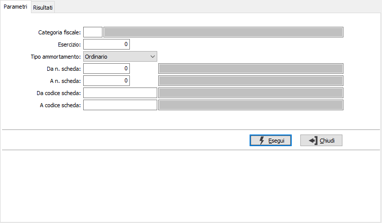
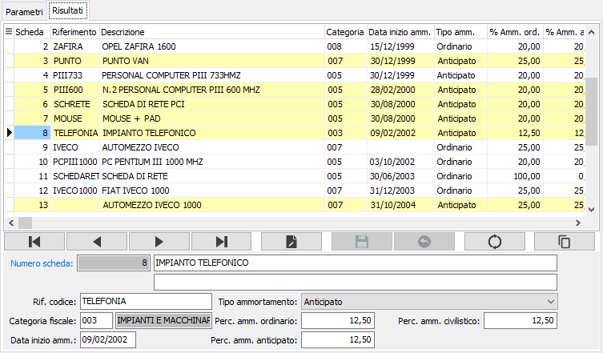
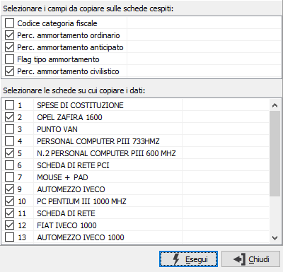

Manutenzione schede cespiti
Tramite questa procedura è possibile selezionare e modificare nei dati più ricorrenti gruppi di schede cespiti. Il funzionamento è simile ad un'analisi a video; la finestra si compone di due linguette: la prima dove inserire i parametri di selezione per ricercare le schede cespiti e la seconda dove apportare le modifiche.
Selezione delle schede

CATEGORIA FISCALE: indica la categoria fiscale per cui effettuare la selezione. Sul campo sono attive le funzioni di ricerca (F9).
ESERCIZIO: Indica l'esercizio di inizio ammortamento per cui effettuare la selezione.
TIPO AMMORTAMENTO: indica il tipo di ammortamento per cui effettuare la selezione. Valori possibili: Ordinario; Anticipato; Ridotto.
DA N. SCHEDA: indica il numero del cespite con cui iniziare la selezione. Sul campo sono attive le funzioni di ricerca (F9). L'utilizzo del numero cespite annulla quello del codice e viceversa.
A N. SCHEDA: indica il numero del cespite con cui terminare la selezione. Sul campo sono attive le funzioni di ricerca (F9). L'utilizzo del numero cespite annulla quello del codice e viceversa.
DA CODICE SCHEDA: indica il codice del cespite con cui iniziare la selezione. Sul campo sono attive le funzioni di ricerca (F9). L'utilizzo del numero cespite annulla quello del codice e viceversa.
A CODICE SCHEDA: indica il codice del cespite con cui terminare la selezione. Sul campo sono attive le funzioni di ricerca (F9). L'utilizzo del numero cespite annulla quello del codice e viceversa.
Manutenzione delle schede

In questa sezione compaiono le schede cespiti trovate in base ai criteri di selezione precedentemente specificati; da qui è possibile operare singole variazioni di campo oppure accedere alla manutenzione della scheda completa tramite la funzione di manutenzione (CTRL+W) dal campo numero scheda cespite.

Il pulsante Copia consente di selezionare e copiare alcuni valori dalla scheda corrente sulle altre presenti nella selezione. Alla pressione del pulsante compare la finestra di selezione. Nella parte superiore sono visualizzati i campi disponibili per la copia; è necessario selezionare, tramite la spunta, quelli da copiare. Nella parte inferiore vengono visualizzate le schede presenti nella selezione; è necessario selezionare, tramite la spunta, quelle su cui copiare i campi selezionati nella parte superiore. La pressione del pulsante Esegui, effettua la copia dei dati selezionati sulle schede scelte.